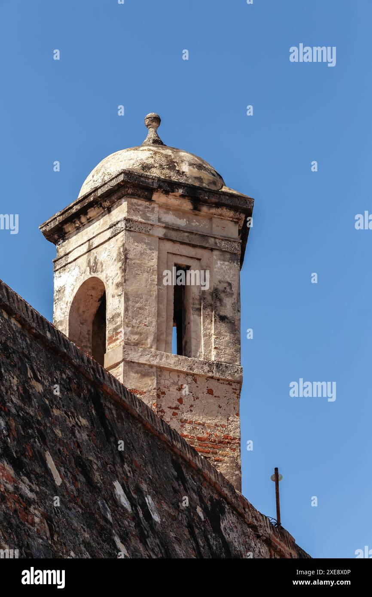
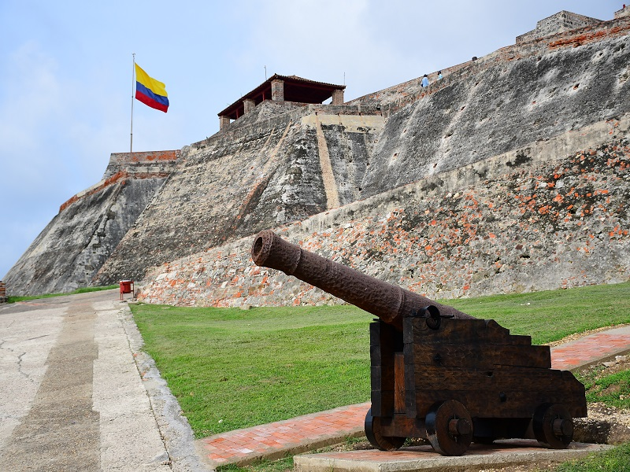
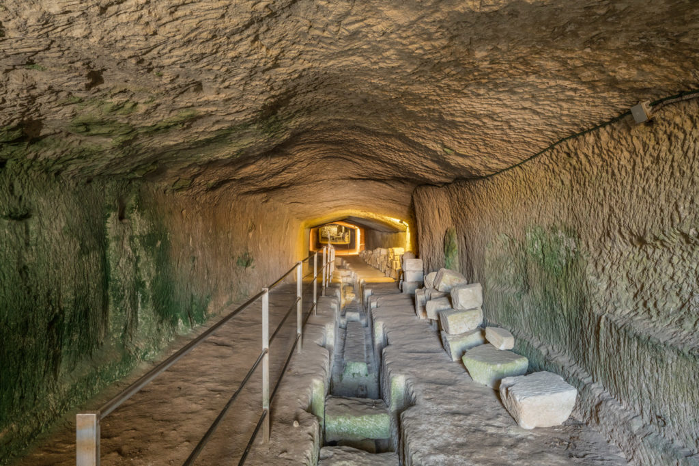
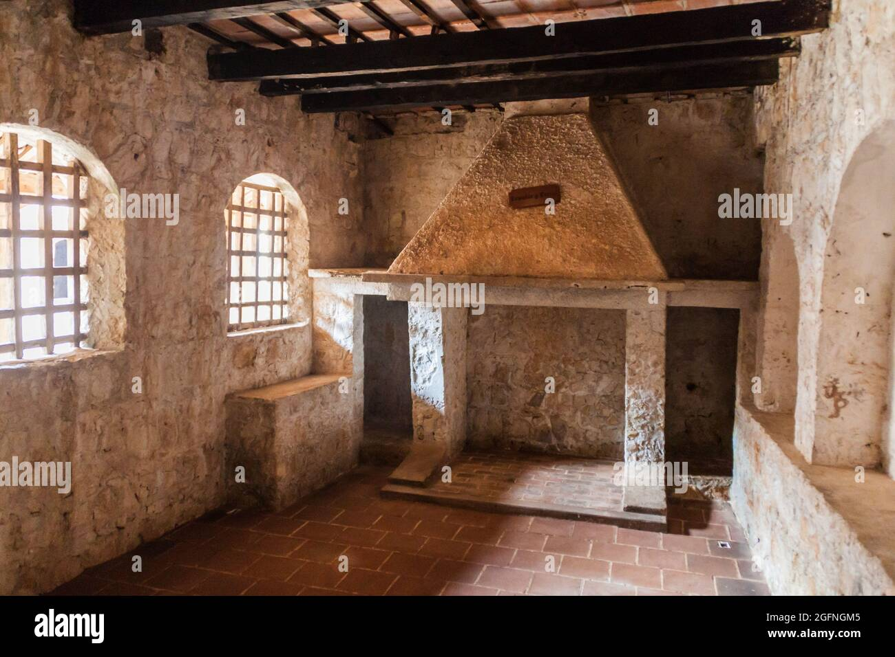
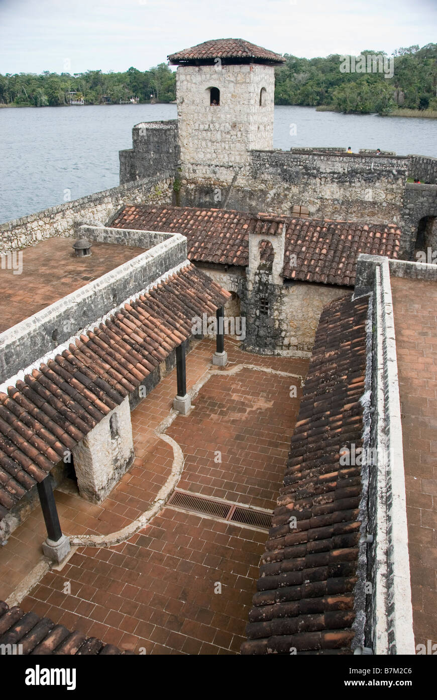
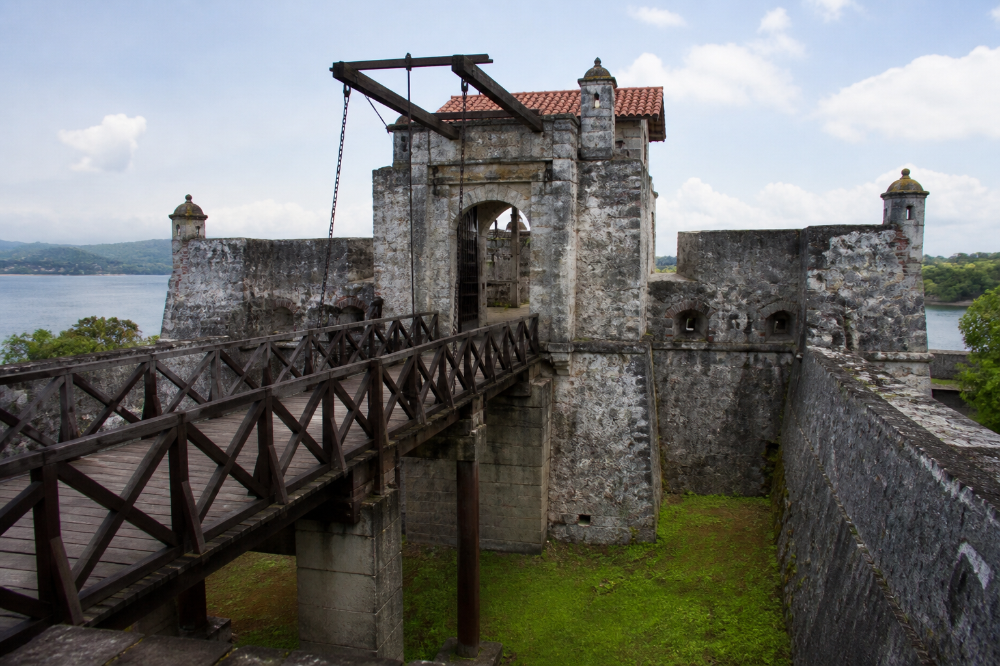

La Torre Principal representa el punto de vigilancia más importante de toda la fortaleza.
Su altura no es casual: fue diseñada estratégicamente para ofrecer una vista completa del
Río Dulce, permitiendo a los soldados detectar cualquier embarcación sospechosa con s
uficiente anticipación.
Construida con gruesos muros de piedra, esta torre garantizaba protección frente a ataques enemigos.
En la actualidad, subir a la torre es una experiencia imperdible, ya que permite contemplar la
inmensidad del paisaje tropical y entender la importancia geográfica del castillo en la época
colonial.

La plataforma de cañones era el corazón defensivo del castillo. Desde aquí se ejecutaban las
estrategias militares para proteger la entrada al Lago de Izabal, una ruta clave para el comercio
español.
Los cañones estaban cuidadosamente posicionados para cubrir los puntos más vulnerables del río.
Hoy, estos cañones son símbolos históricos que permiten al visitante imaginar los enfrentamientos
contra piratas y comprender el valor militar del lugar.

Los túneles subterráneos son uno de los elementos más intrigantes del castillo. Fueron construidos
como vías de comunicación interna y posibles rutas de escape en caso de invasión.
Su diseño estrecho y oscuro ayudaba a mantener el sigilo y la seguridad durante situaciones de peligro.
Recorrerlos es una experiencia única: el ambiente fresco, la poca iluminación y el eco de
los pasos crean una sensación auténtica de estar dentro de una fortaleza antigua.

Las habitaciones reflejan la vida cotidiana dentro del castillo. Eran espacios sencillos, con
lo básico para el descanso de los soldados que pasaban largos periodos vigilando y defendiendo
la fortaleza.
La distribución funcional de estas áreas muestra la disciplina y organización militar de la época.
Este espacio permite al visitante conectar con el lado humano de la historia, imaginando las
rutinas, el esfuerzo y las condiciones en las que vivían los guardianes del castillo.

El Patio Central funcionaba como el eje principal de la vida dentro del castillo. Era un espacio
abierto donde se coordinaban actividades, se reunían los soldados y se organizaban las operaciones
defensivas.
Desde este punto se accede a las diferentes áreas internas, lo que lo convierte en el núcleo de la fortaleza.
Hoy en día, es uno de los lugares más fotogénicos, rodeado de muros de piedra que conservan
su esencia colonial y transmiten historia en cada rincón.

El puente levadizo era una parte importante de la defensa del castillo, ya que permitía controlar
la entrada y salida de personas. En tiempos de ataque, se levantaba para impedir el acceso de piratas
y enemigos. Además, conectaba la fortaleza con la parte exterior, pasando sobre el foso que protegía
la estructura. Actualmente es uno de los puntos más llamativos para los turistas, porque muestra cómo
funcionaba el sistema de seguridad en la época colonial.
Hoy en día, el puente levadizo es un punto muy atractivo para los visitantes porque permite imaginar
cómo funcionaban las defensas del castillo y cómo se preparaban ante posibles invasiones.
"Explorar el Castillo de San Felipe de Lara es descubrir un legado histórico que combina arquitectura militar, paisajes naturales y relatos de defensa que marcaron el Caribe guatemalteco. Cada espacio dentro de sus muros cuenta una historia que sigue viva hasta hoy."